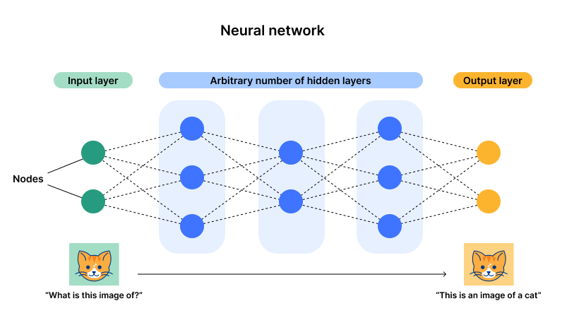
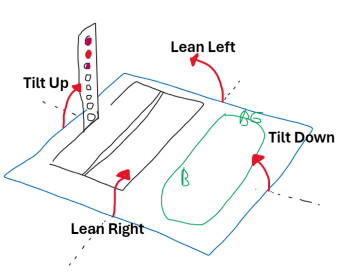
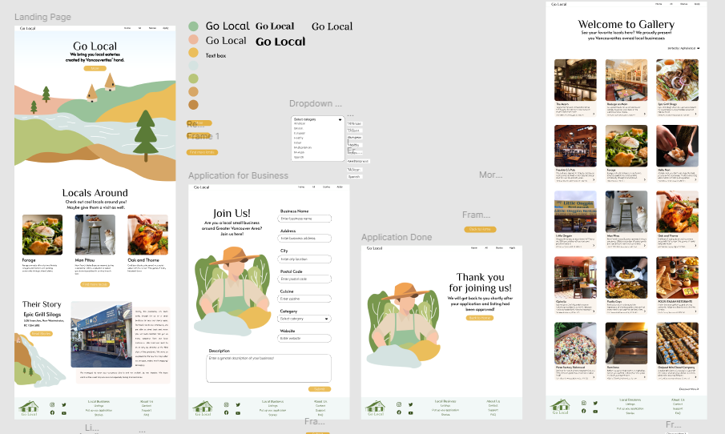
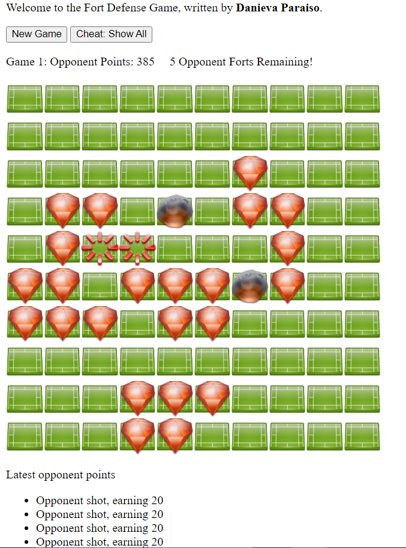

Hi, I'm Danieva
Hi, I'm Danieva
I’m a new graduate of Simon Fraser University with a degree in Computer Science, currently based in New Westminster, BC. My professional interests span machine learning, big data, embedded programming, and design, where I thrive on the synergy of team projects and collaborative environments.
Outside of work, I enjoy the great outdoors with camping and hiking, practice the art of crocheting, and savor the experience of exploring the city. Looking forward to connecting and creating together!
Connect with me on LinkedIn, take a look at my Github or take a peek at my Resume
Developed and optimized a neural network to predict heart disease, incorporating several advanced techniques for improved performance. I used effective weight initialization methods to ensure faster convergence and mitigate the risk of vanishing or exploding gradients. To prevent overfitting, I implemented L2 regularization, which adds a penalty term to the loss function and discourages large weights. Mini-batch gradient descent was employed to update the network's weights efficiently by computing the gradient on small, random subsets of the training data, balancing stability and speed. Additionally, I applied gradient descent optimization with momentum, which uses past gradients to smooth out updates, helping the network navigate the loss landscape more effectively and avoid local minima. For more details please see here
Machine learning algorithm that makes predictions about whether an input image contains a cat or not. Program has the following structure
Please contact me for more detailed information on this project.
Final project for database course (CMPT 354) involved developing a comprehensive web application centered around a relational database. Program was implementing using MySQL for robust data management and Apache for efficient server operations. The front-end interface was crafted using PHP and HTML to provide an intuitive and seamless user experience. Key features included the implementation of CRUD operations; enabling users to interact with the database effortlessly. This project successfully demonstrated full functionality and usability, earning a perfect grade and showcasing the effectiveness of our design and implementation choices. Details can be found here
A helpful reminder android application for care takers and patients with dementia. Stores unique schedules, pictures, and instructions, for each patient and reminds them of a given task at a set time using the information provided. For more deteails, please see here
This embedded project replicates a balance shooting game, featuring an LED PRU, accelerometer, joystick, PWM buzzer, and a 14-segment display. The following is a sketch of how the board operates
For more on this project see here
Conducted ETL on historical movie datasets from IMDB, Wikipedia, and Kaggle for analysis. Applied linear regression, ANOVA, Tukey's Post Hoc Analysis, and other mathematical/statistical techniques to derive informed conclusions. For the full analysis please see here
A hackathon project featuring an HTML/CSS website that leverages Firebase Firestore and JavaScript to manage details of local businesses. Business owners can add their businesses to the website's listing page, alongside other local entries. The project involved prototyping and design using sketches and creating the user interface with Figma. More details can be found here. The following is a storyboard of the page
This project involves two main tasks: analyzing Reddit comments and exploring server log correlation. For the Reddit analysis, we calculate the average score for each subreddit and identify the author of the "best" comment, defined as the one with the highest score relative to the subreddit's average. These results are outputted in a JSON format. In the server log correlation task, we analyze NASA web logs from 1995 to determine the correlation between the number of requests made by a host and the total bytes transferred. I developed a Spark program to process the logs, compute necessary sums, and caluculate the correlation coeffiecient and its square. Both tasks involve data extraction, transformation, and analysis to derive meaningful insights. For further detail please email me.
This was my first independent project. In a team of four, I designed and fully implemented a portable lamp that changes brightness based on ambient light. I programmed the Arduino using C to read analog light sensor values and send signals for automatic light adjustment. Also assisted in implementing a circuit to adjust the current flow using N-MOSFETs and diodes, ensuring efficient and responsive brightness control. You can see more detailed information here
Implemented a Java-based game with a web interface, reminiscent of Battleship but with unique variations. The user interface, showcased in the attached image, was developed using RESTful API and Spring Boot.
More details listed here